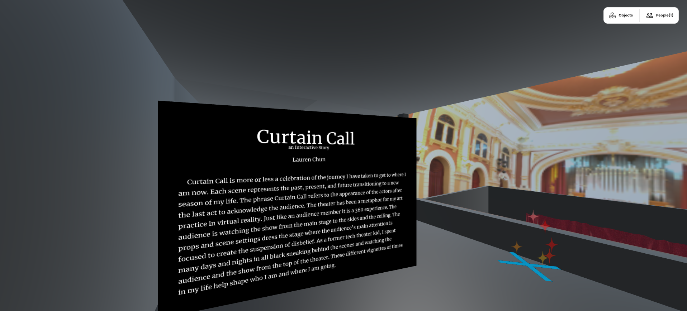
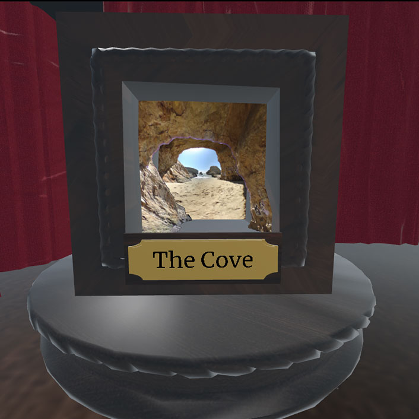
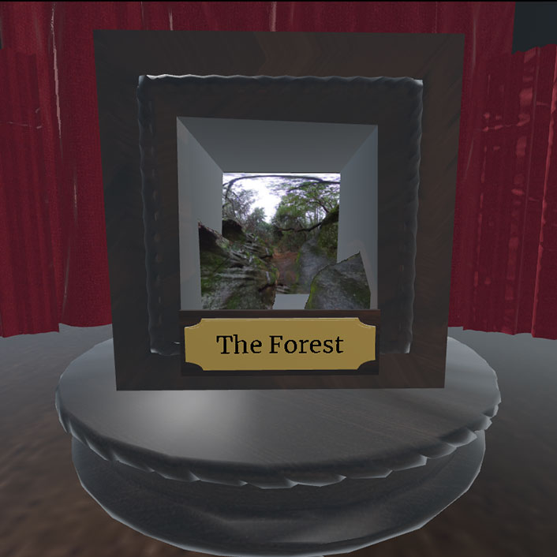
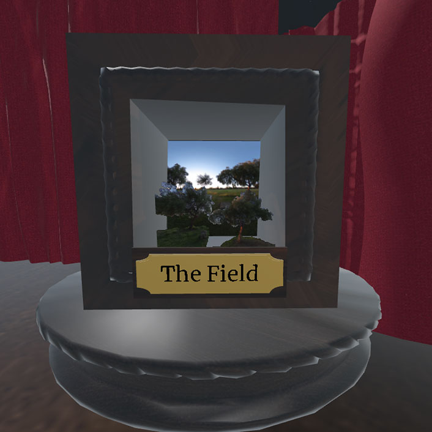

This piece was created with the circumstances of the COVID-19 pandemic. I designed this project with accessibility to the artwork as the primary contributing factor in mine. I chose to use mozilla hubs to give the ability for anyone to view the piece in virtual reality be it laptop or headset for increased immersion.
The project's inspiration was birthed from my time in nature this past year. I was able to go to places that were foreign, but just a short walk or drive away from where I call home. Each picture was a mini time capsule of the moment I was in each space, but also a reflection on how I was feeling about where I am in life. I chose each scene to represent my past, present, and future.
The concept of the theater being the hub for my piece is tied to how I view creating virtual environments. Each scene is made out for what you are meant to see. The graphics might be stylized or a different resolution to what you might want. but due to the immersion of the space viewers are suspense their disbelief of the experience.
Through this project I was able to learn more about other 3D techniques and how to impliment them into one work. I took some 3D scans with tnio and meshroom that did not end up in the finished project.
Big thanks to Tyler for helping me through the process of making this!
The concept of Curtain Call comes from theateric performances. The cast comes out to meet the audience's aplauses after the last act. I wanted to play on that idea of an acknowledgement to my past chapter of life before I transition to a new one.
Viewers coming into the space start in a higher elevation and then transition down to the stage. I wanted to have this perspective change to allow audience to get to experience the space in a more nontraditioal vantage point.
After the viewer goes down to the stage there are three shadowboxes in front of them. Each box is used to hold the scene that they can experience. I have one shadowbox to show the past, present, and future.
  My past or where I was is represented by the cove cave. The cove is secluded and protected. There is only one way in and the focus is on the waves ahead. There was some turbulence getting to where I am today, but I have found safety amongst the familar.
The forest symbolizes the present, where there is an unknown but there is some shelter and struction in the form of the rocks surrounding the viewer.
Moving towards the future, the field is wide open for potential possibilites. There is a path you can take and there is only one way out of the field.
Image of the space in the digital autonomy lobby.